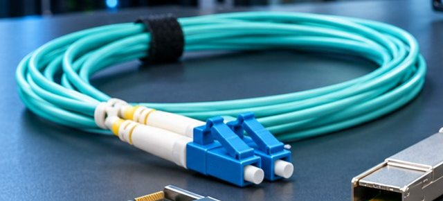
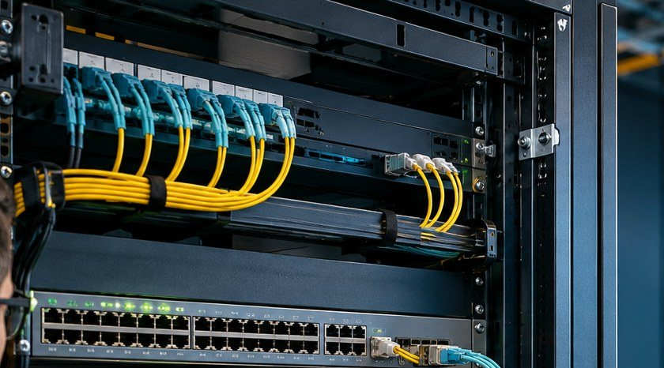

Ethernet, switching et Wi-Fi › Câbles, fibre et énergie
Câbles cuivre et fibres
Choisir le bon support physique
Le cuivre transporte des impulsions électriques jusqu’à 100 mètres ; la fibre transporte de la lumière sur des centaines de mètres ou des dizaines de kilomètres.
Commence par « Découvrir ». Passe à « Approfondir » quand l’essentiel est clair.
Le problème : relier deux équipements
Entre un ordinateur et la prise murale, entre deux étages, entre deux bâtiments, entre deux villes : la distance, le débit voulu et l’environnement (bureaux, usine, extérieur) changent tout. Il existe deux grandes familles de câbles réseau, et le choix n’est pas une question de goût.
Le cuivre : la paire torsadée
C’est le câble « réseau » que tout le monde connaît, terminé par une prise RJ45. À l’intérieur, quatre paires de fils de cuivre torsadés deux à deux. La torsade limite les interférences entre fils et avec l’extérieur.

- Distance maximale : 100 mètres par segment (90 m de câble fixe + 10 m de cordons).
- Le signal est électrique : il est sensible aux perturbations (moteurs, néons, câbles électriques proches).
- La catégorie du câble indique la vitesse qu’il supporte :
| Catégorie | Usage courant |
|---|---|
| Cat5e | jusqu’à 1 Gb/s |
| Cat6 | 1 Gb/s ; 10 Gb/s sur moins de 55 m |
| Cat6A | 10 Gb/s sur 100 m — le standard des installations récentes |
Le cuivre peut aussi transporter du courant pour alimenter un téléphone, une caméra ou une borne Wi-Fi : c’est le PoE.
La fibre optique : de la lumière dans du verre
Une fibre est un fil de verre plus fin qu’un cheveu. Le signal est lumineux : une diode laser s’allume et s’éteint des milliards de fois par seconde.
- Insensible aux perturbations électriques, idéale entre bâtiments (pas de problème de mise à la terre ni de foudre).
- Longues distances : de quelques centaines de mètres à plusieurs dizaines de kilomètres.
- On l’utilise par paires : une fibre pour émettre, une pour recevoir.

Il en existe deux types :
| Type | Cœur | Distance typique | Gaine (code couleur courant) |
|---|---|---|---|
| Multimode (OM3, OM4) | large, 50 µm | jusqu’à quelques centaines de mètres | turquoise ou violette |
| Monomode (OS2) | très fin, 9 µm | plusieurs kilomètres à dizaines de kilomètres | jaune |
L’analogie du couloir
Dans une fibre multimode, la lumière rebondit sur les parois d’un large couloir en empruntant plusieurs trajets (plusieurs « modes ») : les rayons n’arrivent pas tous au même moment, ce qui limite la distance. Dans une fibre monomode, le couloir est si étroit qu’un seul trajet est possible : le signal reste net beaucoup plus loin.
Comment brancher une fibre sur un switch ?
Un switch a rarement une prise fibre intégrée. Il possède des cages où l’on glisse un petit module optique (SFP, SFP+…) qui convertit le signal électrique en lumière. On choisit le module selon la fibre et la distance. C’est l’objet des fiches SFP et SFP+.

Erreurs fréquentes
- Dépasser 100 m en cuivre : le lien peut monter mais produire des erreurs, ou redescendre à une vitesse inférieure.
- Mélanger les types : un module prévu pour du monomode en face d’une fibre multimode (ou l’inverse), ou deux modules de types différents aux deux extrémités.
- Croiser mal les fibres : l’émission d’un côté doit arriver sur la réception de l’autre. Si le lien ne monte pas, inverser les deux fibres d’un côté est le premier test.
- Regarder dans une fibre active : les lasers de certains modules sont invisibles et peuvent abîmer l’œil.
Les mots à connaître
- Paire torsadée — Câble en cuivre composé de quatre paires de fils torsadés, terminé par des prises RJ45.
- RJ45 — Connecteur à 8 contacts des câbles Ethernet en cuivre.
- Fibre multimode — Fibre à cœur large pour les distances courtes, souvent turquoise (OM3) ou violette (OM4).
- Fibre monomode — Fibre à cœur très fin pour les longues distances, généralement jaune (OS2).
- Module optique — Petit boîtier enfichable qui convertit le signal électrique du switch en lumière.
Teste-toi
1. Il faut relier deux bâtiments distants de 600 mètres à 10 Gb/s. Cuivre ou fibre ? Quel type ?
Voir le corrigé
Fibre, car le cuivre est limité à 100 m. À 600 m et 10 Gb/s, la monomode est le choix sûr (avec des modules 10GBASE-LR, prévus pour 10 km). La multimode OM4 est limitée à environ 400 m à 10 Gb/s.
2. Un lien fibre neuf ne monte pas. Les modules sont bons et identiques des deux côtés. Quel test simple faire en premier ?
Voir le corrigé
Inverser les deux fibres à une extrémité. Si l’émission arrive sur l’émission d’en face, aucune lumière n’est reçue. C’est l’erreur la plus fréquente sur un lien neuf.
Les normes Ethernet cuivre
Le nom d’une norme Ethernet se lit ainsi : débitBASE-support.
| Norme | Débit | Paires utilisées | Câble minimum | Distance |
|---|---|---|---|---|
| 100BASE-TX | 100 Mb/s | 2 | Cat5 | 100 m |
| 1000BASE-T | 1 Gb/s | 4 | Cat5e | 100 m |
| 2.5GBASE-T / 5GBASE-T | 2,5 / 5 Gb/s | 4 | Cat5e / Cat6 | 100 m |
| 10GBASE-T | 10 Gb/s | 4 | Cat6A (Cat6 : ≤ 55 m) | 100 m |
Les normes 2,5 et 5 Gb/s (NBASE-T, IEEE 802.3bz) servent surtout à alimenter les bornes Wi-Fi 6 et 7, dont le débit dépasse 1 Gb/s, sans recâbler un bâtiment en Cat6A.
Blindage : U/UTP (aucun blindage), F/UTP (blindage global), S/FTP (chaque paire blindée). Un câble blindé n’apporte rien si la chaîne de mise à la terre n’est pas continue d’un bout à l’autre.
Les normes Ethernet fibre
| Norme | Débit | Fibre | Longueur d’onde | Portée typique |
|---|---|---|---|---|
| 1000BASE-SX | 1 Gb/s | multimode | 850 nm | 550 m (OM2) |
| 1000BASE-LX | 1 Gb/s | monomode | 1310 nm | 10 km |
| 10GBASE-SR | 10 Gb/s | multimode | 850 nm | 300 m (OM3), 400 m (OM4) |
| 10GBASE-LR | 10 Gb/s | monomode | 1310 nm | 10 km |
| 10GBASE-ER | 10 Gb/s | monomode | 1550 nm | 40 km |
| 25GBASE-SR | 25 Gb/s | multimode | 850 nm | 70 m (OM3), 100 m (OM4) |
| 100GBASE-SR4 | 100 Gb/s | multimode, 8 fibres (MPO) | 850 nm | 70 m (OM3), 100 m (OM4) |
| 100GBASE-LR4 | 100 Gb/s | monomode, 2 fibres | 4 longueurs d’onde autour de 1310 nm | 10 km |
Le suffixe S (short) désigne la courte portée en multimode, L (long) 10 km en monomode, E (extended) 40 km.
Connecteurs et polissage
- LC : petit connecteur duplex, standard sur les modules SFP. SC : plus gros, fréquent sur les tiroirs optiques anciens et les réseaux d’opérateur. MPO/MTP : 12 ou 24 fibres dans un seul connecteur, pour le 40 et le 100 Gb/s parallèles.
- UPC (embout bleu) et APC (embout vert, poli en biais à 8°) : ne jamais les connecter ensemble. Le contact est mauvais et peut endommager les embouts. L’APC est courant en FTTH et en vidéo.
Le budget optique
Un lien fibre fonctionne si la puissance reçue reste dans la plage acceptée par le récepteur. On fait le bilan :
budget disponible = puissance émise minimale − sensibilité du récepteur
pertes du lien = longueur × atténuation + connecteurs + épissures + marge
Exemple : 10GBASE-LR, fibre OS2 de 6 km, 4 connecteurs, 2 épissures
atténuation fibre : 6 km × 0,4 dB/km = 2,4 dB
connecteurs : 4 × 0,5 dB = 2,0 dB
épissures : 2 × 0,1 dB = 0,2 dB
marge de vieillissement = 1,0 dB
total = 5,6 dB (budget LR ≈ 6,2 dB : ça passe, de justesse)
Sur un switch, on vérifie la puissance reçue avec la surveillance optique numérique (DOM/DDM) :
SW1# show interfaces TenGigabitEthernet1/1/1 transceiver detail
Optical High Alarm High Warn Low Warn Low Alarm
Port Temperature Rx Power Threshold Threshold Threshold Threshold
--------- ----------- -------- --------- --------- --------- ---------
Te1/1/1 32.1 C -14.2 0.5 -1.0 -14.4 -18.4
Une puissance reçue de -14,2 dBm, juste au-dessus du seuil d’avertissement bas (-14,4), annonce un lien fragile : fibre sale, courbure trop serrée, connecteur abîmé ou distance excessive.
Astuce
Nettoyer avant de remplacer. Une poussière sur l’embout d’un connecteur suffit à perdre plusieurs dB. Un stylo nettoyant et un microscope de contrôle résolvent une grande partie des pannes optiques, pour un coût dérisoire.
Dépannage physique : une méthode
| Symptôme | Causes probables | Vérification |
|---|---|---|
Lien down/down, cuivre |
câble débranché ou coupé, port désactivé | voyant, show interfaces status, testeur de câble |
| Lien à 100 Mb/s au lieu de 1 Gb/s | une ou deux paires abîmées | testeur de câble (les 4 paires) |
| Erreurs CRC qui augmentent | connecteur mal serti, interférences, désaccord de duplex | show interfaces, remplacer le cordon, vérifier le duplex |
Lien fibre down, aucune lumière reçue |
fibres inversées, module incompatible, fibre coupée | inverser les fibres, show interfaces transceiver, photomètre |
| Lien fibre instable | puissance reçue proche du seuil | nettoyer, mesurer, réduire les connecteurs intermédiaires |
Exercices
1. Un lien 10GBASE-SR en OM3 doit couvrir 350 m. Est-ce conforme ? Que proposer ?
Voir le corrigé
Non : 10GBASE-SR est spécifié pour 300 m en OM3. Options : passer en OM4 (400 m) si la fibre est remplacée, ou utiliser des modules 10GBASE-LR sur de la monomode. Garder des modules SR sur 350 m d’OM3 pourrait fonctionner en apparence, mais sans marge : le lien risque d’être instable.
2. Un technicien relie un tiroir optique en SC/APC à un cordon SC/UPC. Que risque-t-il ?
Voir le corrigé
Un mauvais contact (perte importante et réflexions) et une détérioration des embouts, car les faces polies à 8° et à plat ne s’appuient pas correctement. Il faut des connecteurs de même polissage aux deux extrémités d’une connexion.
3. Un switch d’étage est à 120 m du local technique, en cuivre Cat6A. Le lien monte à 1 Gb/s mais présente des erreurs. Explique pourquoi et propose deux solutions.
Voir le corrigé
La limite de 100 m est dépassée : le signal est trop affaibli et les erreurs apparaissent. Solutions : une liaison fibre (modules SFP + fibre multimode) entre le local et l’étage, ou un switch intermédiaire placé avant les 100 m (à condition de disposer d’un local adapté et alimenté).